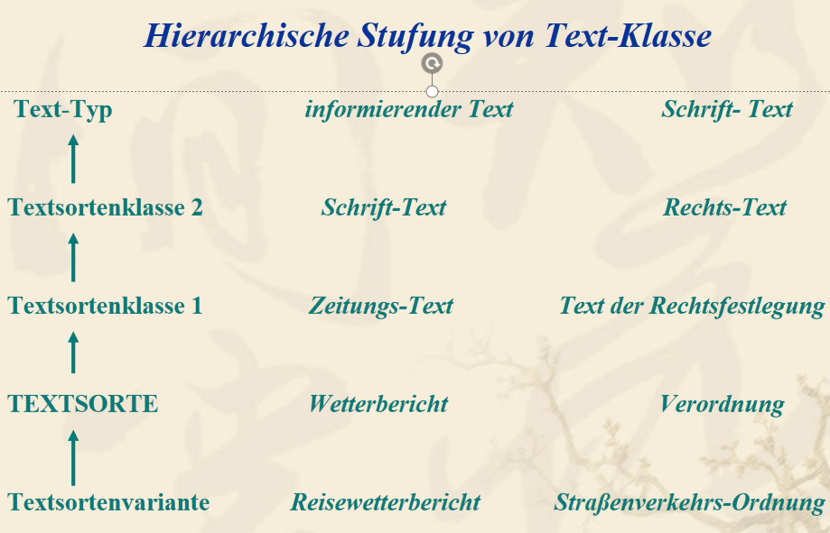
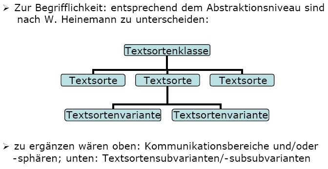
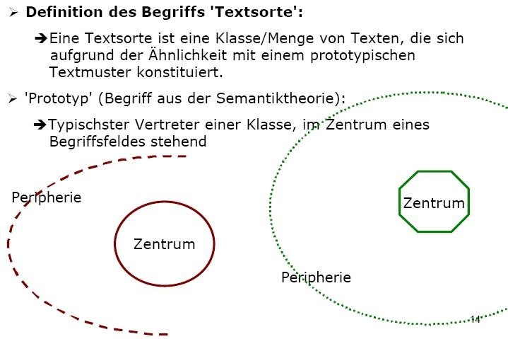

5 Textmuster und Textsorten
5.1 Textdefinitionen
Als Ausgangspunkt greifen wir nochmals auf zwei gängige Textdefinitionen zurück.
Text-Definition in der Grammatik von Engel (1988: 33):
Texte sind:
- Geflechte von Äußerungen
- konnex
- haben eine nachvollziehbare Struktur
- sind sortenspezifisch.
Text-Definition von Beaugrande & Dressler (1992):
Texte sind Äußerungsfolgen, die sieben Textualitätskriterien genügen:
- Kohärenz
- Kohäsion
- Intentionalität
- Akzeptabilität
- Informativität
- Situationalität
- Intertextualität.
Wir haben die Auffassung vertreten, dass nur prototypische Texte alle Kriterien erfüllen.
Intertextualität im Sinne der Musterhaftigkeit von Texten wird in der Textlinguistik insbesondere mit Hilfe der Konzepte Textmuster und Textsorte diskutiert. (weitere Begriffe: Textklasse, Texttyp)
5.2 Textmuster
Heinemann (2000: 519) definiert Textmuster als:
- „[…] Teilmengen des Interaktionswissens der Kommunizierenden.
- Sie fungieren als gesellschaftlich determinierte, von Individuen interiorisierte konventionelle Schemata/Muster, die auf komplexe Interaktions- und Textganzheiten bezogen sind.
- Sie basieren auf kommunikativen Erfahrungen der Individuen
- und werden als Orientierungsraster zur Auslösung kognitiver Prozesse der Herstellung von Texten einer bestimmten Klasse
- mit dem Ziel der Lösung spezifischer kommunikativer Aufgaben aktiviert.“
Heinemann betrachtet Textmuster als Teil des Vorwissens, das während des Verstehensprozesses aktiviert wird und die Texterwartung des Lesers determiniert. Dieses Wissen bezeichnet er als Textmusterwissen.
Gemäß Heinemann (2000a: 517) korrespondiert dieses Textmuster-Konzept „mit grundlegenden Speicherungs- und Verarbeitungstheorien der kognitiven Psychologie“, und zwar mit dem frame-Konzept, mit der Schema-Theorie, mit den script-Modellen und auch teilweise mit den mentalen Modellen.
Nach Heinemann sind Textmuster gekennzeichnet durch:
- Multidimensionalität (Mehrebenen-Modelle),
- Repetitivität,
- Vagheit und
- Flexibilität.
Textmuster spielen demnach eine zentrale Rolle in der Ganzheit der Textverarbeitungsprozesse, d.h. sowohl in der Textrezeption als auch in der Textproduktion. Anhand der gespeicherten Textmuster sind Teilnehmende in der Kommunikation fähig, bestimmte Textsorten zu identifizieren und in bestimmten kommunikativen Situationen aktiv zu produzieren.
Textmuster sind somit:
- Rahmenmodelle für den Ablauf spezifischer Kommunikationsereignisse.
- Sie erlauben den Kommunizierenden ein schnelles verbales Agieren und Re-agieren in bestimmten häufig wiederkehrenden Situationen.
- Sie werden von den Kommunizierenden durch „vorgefertigte“ Äußerungseinheiten und -strukturen aufgefüllt.
Das Textmusterwissen (Linke/Nussbaumer/Portmann 1994, S.253-254) ermöglicht uns einen routinierten Alltags-Umgang mit bestimmten Textsorten. Es besteht aus den Erfahrungen, die wir mit Texten machen und die Protoypen von Textsorten generieren. Mit deren Hilfe können wir bestimmte Textmuster leichter erkennen und intuitiv bestimmten Textsorten zuordnen. Aufgrund unseres prototypischen Textmusterwissens können wir nämlich:
- einen Text, der zerschnitten oder fehlerhaft angeordnet ist, wieder so zusammensetzen, wie sich für die jeweilige Textsorte gehört.
- als Leser wissenschaftlicher Abhandlungen “wissen, dass am Schluss eines Textes sowie als Abschluss von größeren Unterkapiteln kurze Zusammenfassungen zu erwarten sind, und dass wir durch gezielte Suche nach solchen Textstellen uns auch bei einem dicken Wälzer relativ rasch einen gewissen inhaltlichen Überblick verschaffen können”.
- beim Zeitungslesen am Frühstückstisch einfach die Seiten “überfliegen” und trotzdem dadurch im Großen und Ganzen informiert sein.
Indizien für Textmuster (Lörscher, Zhen Li , Miao Wie - Uni Leipzig):
- Kommunizierende sind fähig, situativ und sozial angemessen zu handeln.
- Sie bilden in vergleichbaren Situationen immer wieder Texte von gleicher Struktur, teils mit ähnlichen Formulierungen.
- Sie können beim Textverstehen einen gegebenen Text klassifizieren.
- Sie verwenden bestimmte Organisationsformen von Texten und spezifische Formulierungen nur in Texten einer je spezifischen Textklasse.
Die grundlegenden Dimensionen (Ebenen) für Textmuster:
- Funktionalität: eine spezifische Funktion des Textes
- Situativität: situative, interaktionale und diskursive Einbettung des Textes
- Thematizität: die Text-Thema-Prägung
- Formulierungsadäquatheit: das Wissen um spezifische Formulierungsmaximen und Formulierungsspezifika.
Die vier Ebenen wirken bei der Konstitution von Textmustern zusammen. Dabei kann den einzelnen Ebenen unterschiedliches Gewicht. zukommen. Unterschiedliche Gewichtung der einzelnen Dimensionen nach Distinktivität und Dominanz lässt den prototypischen Charakter von Textmustern hervortreten: z.B.
- Telegramm/ Privatbrief: situativ dominiert
- Heiratsanzeige/ Sportreportage: inhalt-thematisch dominiert …
5.3 Textsorte
Linguistische Definition von Textsorten bei K. Brinker (1985/2001):
Textsorten sind:
- konventionell geltende Muster für komplexe sprachliche Handlungen
- Sie lassen sich als jeweils typische Verbindungen von kontextuellen (situativen), kommunikativ–funktionalen und strukturellen (grammatischen und thematischen) Merkmalen beschreiben.
- Sie haben sich in der Sprachgemeinschaft historisch entwickelt und
- gehören zum Alltagswissen der Sprachteilhaber;
- sie besitzen zwar eine normierende Wirkung,
- erleichtern aber zugleich den kommunikativen Umgang, indem sie den Kommunizierenden mehr oder weniger feste Orientierungen für die Produktion und Rezeption von Texten geben. (Brinker 2001: 124)
Textsorten (Textklassen oder Texttypen) werden allgemein als: komplexe Muster sprachlicher Kommunikation verstanden, die innerhalb der Sprachgemeinschaft im Laufe der historisch-gesellschaftlichen Entwicklung aufgrund kommunikativer Bedürfnisse entstanden sind.“ (Brinker 2001: 118)

Textemplare (Textvorkommen) können bestimmte Merkmale aufweisen, die sie mit gewissen anderen Textemplaren gemeinsam haben. Die Textemplare können als Repräsentanten einer bestimmten Textklasse aufgefasst werden: z.B. der Textsorte:
Kochrezept, Stelleninserat, Todesanzeige, Werbeanzeige, Anmeldeformular, Anweisung, Ausschreibung, Bewerbungsschreiben, Lebenslauf, Beschwerde, Vertrag, Abkommen, Gesetzesentwurf, Amendment, Gerichtsurteil, Bedienungsanleitung, Lexikon, Vortrag, Abhandlung, Wettervorhersage, Meldung, Bericht, Rezension, Reportage, Kommentar, Erörterung, Diskussion, Interview, Befragung, Geschäftsbrief, Liebesbrief, E-Mail, Forum-Beitrag, Facebook-Post, Tweet, Comic Strip, Roman, Novelle, Gedicht, …
5.4 Textmuster vs. Textsorten
Textmuster und Textsorten lassen sich folgendermaßen unterscheiden (aus der Präsentation von Hartmut Lenk, S. 12):
Textmuster: allgemeine kognitive Themen-/Verfahrensvorgabe, also kognitive Prozesse zur Generierung und zum Verstehen/Verarbeiten konkreter Textexemplare.
Textsorten: Ergebnisse kognitiver Operationen, bezogen auf konkreten Textexemplare und deren Merkmale, in Form von Textklassen dargestellt. „Jede Textsorte hat ein konventionalisiertes Textmuster, aber nicht jedes Textmuster ist automatisch auf eine Textsorte bezogen“ (Riehl 2001, 96)
5.5 Hierarchie der Textklassen
Eine Textklasse (TK) ist eine Menge von Texten.
Eine Textsorte (TS) ist eine Textklasse mit einer Menge von Gemeinsamkeiten (G): TS >>> G*TK.
Wenn für „G“ nur wenige, generelle Gemeinsamkeiten gesetzt werden, erhält man einen großen Geltungsbereich und eine relative hohe Abstraktionsstufe (Schriftliche Texte, politische Texte, Alltags-Texte, …). Diese Textklasse werden Text-Typen genannt.
Wenn für „G“ eine große Zahl konkreter Merkmale verwendet werden, entstehen Basisklassen von Texten mit geringem Geltungsbereich und geringerer Abstraktionsstufe. Diese bezeichnen wir als Textsorten (Arztrezept, Kochrezept, Todesanzeige, Privatbrief …).
Zwischenstufen sind die Textsortenklassen.
Subklassen der Textsorten sind Textsortenvarianten.

Textsorten:
Mengen authentischer Texte in der Alltagskommunikation die in einigen Merkmalen übereinstimmen, die aber nicht für alle Texte gelten. Vage gehaltene Bezeichnung für jede Erscheinungsform von Texten.

Nach Isenberg verwendet man den Terminus Texttyp (im Unterschied zum Begriff Textsorte) “als theoriebezogene Bezeichnung für eine Erscheinungsform von Texten, die im Rahmen einer Texttypologie beschrieben und definiert ist” (Isenberg 1983: 308).
Der Begriff Texttyp ist nach Heinemann/Viehweger (1991:144) eine theoriebezogene Klassifikation. Textsorte und -klasse bezeichnen empirisch vorgefundene Gemeinsamkeiten.
